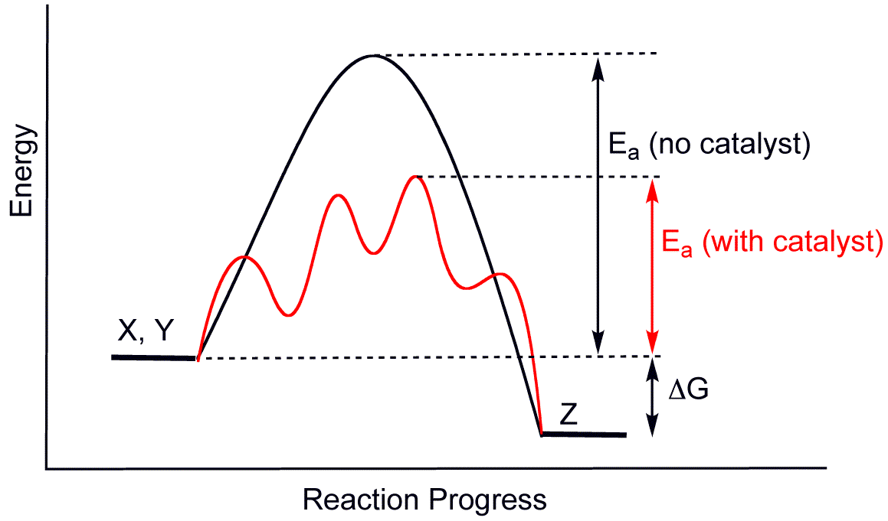

1.9 – Process Economics¶
1.9.0 – Learning Objectives¶
By the end of this section you should be able to:
- Understand the concept of process economics and why it is important.
- Understand the concept of the four basic figures of merit.
- Identify which expense falls into a specific figure of merit
1.9.1 – Introduction¶
The main objective of a chemical engineer is to try to make a process as efficient as possible. If efficiency is increased, then profits for the company increase, pollution and waste decrease. These factors are vital in the process industry.
1.9.2 – Four Basic Figures of Merit¶
There are four basic figures of merit that determine the economic viability of a process, the gross economic potential (GEP), the net economic potential (NEP), the capital costs (CC), and the return on investment (ROI). These figures of merit are defined as:
The units for these terms are:
1.9.3 – Feedstock¶
Feedstock is raw material used to supply an industrial process. The cost of the feedstock is determined by its quantity and quality. The higher the quality, which is defined by its purity, the higher the price. Although high purity feedstock is more expensive, the presence of impurities creates more unwanted by-products and waste products from the reaction. Impurities can also reduce the effectiveness of catalyst and increase corrosion so there is a middle ground that needs to be found. Feedstock falls under the GEP figure of merit.
1.9.4 – Catalyst¶
Catalyst greatly increase the efficiency of a process, lower operating costs and increase profits. Every catalyst works differently but the main idea behind it is that they lower the activation energy needed to allow a chemical reaction to occur. By lower the activation energy, the energy needed to produce the wanted products is greatly lowered. Catalyst falls under NEP figure of merit. 
Attribution: By No machine-readable author provided. Smokefoot assumed (based on copyright claims). [Public domain], via Wikimedia Commons
1.9.5 – Energy¶
One of the largest if not the largest cost of a chemical process is the energy cost. The energy needed can be lowered by using a catalyst, discovering new ways to improve how a reaction is conducted, or renewing old unit operations. Decreasing the energy needed for the process increases profits and helps the environment by lowering the carbon footprint of the process. energy falls under the NEP figure of merit.
1.9.6 – Problem Statement¶
Question¶
You are the lead chemical engineer at a chemical plant in Burnaby. One of your employees has suggest using a new catalyst that costs $200 per tonne of product more than the current catalyst you use, but lowers energy need by 5 MWh per tonne of product. The total power used per tonne is 10 MWh the cost of energy in BC is $0.0858 per kWh for the first 1,350 kWh and $0.1287 for anything over the 1,350 kWh threshold. Is this a viable replacement? Which figure or figures of merit will you be affecting by this change?
Answer¶
Since the plant already uses 10 MWh, we will already be past the first threshold even with the savings. Therefore the only price we need to worry about is $0.1287.
In [1]:
cost_increase = 200
power_needed = 5000
power_price = 0.1287
cost_decrease = power_needed * power_price
savings = cost_decrease - cost_increase
print("Using the new catalyst will save the plant $", savings, "so it is a viable option.")
Using the new catalyst will save the plant $ 443.5 so it is a viable option.
The figures of merit you will be affecting are the NEP and ROI.
In [ ]: